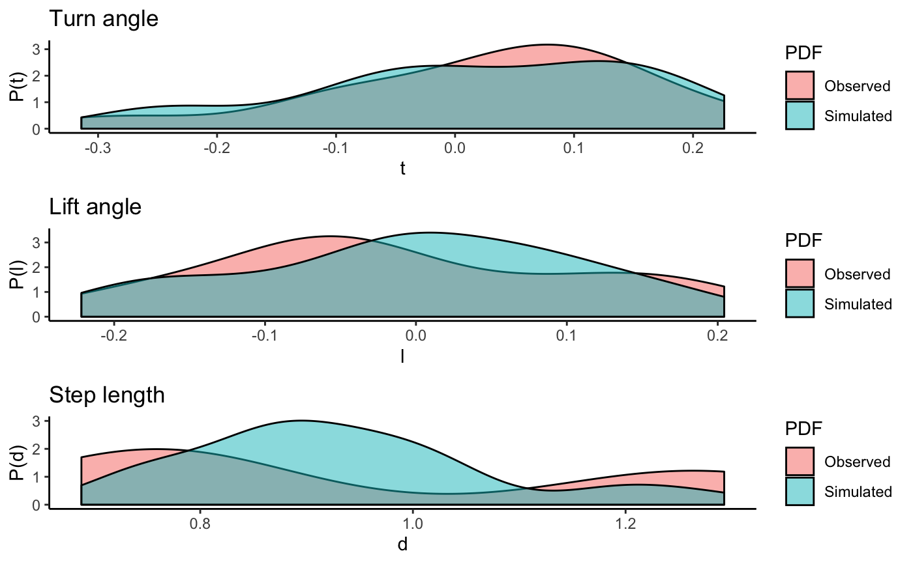

The test simulates a CRW with given parameters and reconstructs it by using the eRTG3D
test.eRTG.3d(parallel = FALSE, returnResult = FALSE, plot2d = FALSE, plot3d = TRUE, plotDensities = TRUE)
| parallel | logical: test running parallel? |
|---|---|
| returnResult | logical: return tracks generated? |
| plot2d | logical: plot tracks on 2-D plane? |
| plot3d | logical: plot tracks in 3-D? |
| plotDensities | logical: plot densities of turning angle, lift angle and step length? |
A list containing the original CRW and the simulated track (CERW).
test.eRTG.3d()#>#>#>#> | | | 0% | |==== | 5% | |======= | 10% | |=========== | 15% | |============== | 20% | |================== | 25% | |===================== | 30% | |========================= | 35% | |============================ | 40% | |================================ | 45% | |=================================== | 50% | |======================================= | 55% | |========================================== | 60% | |============================================== | 65% | |================================================= | 70% | |===================================================== | 75% | |======================================================== | 80% | |============================================================ | 85% | |=============================================================== | 90% | |=================================================================== | 95% | |======================================================================| 100%#>#>#>#>#>#>#>#>#> | | | 0% | |=== | 4% | |====== | 9% | |========= | 13% | |============ | 17% | |=============== | 22% | |================== | 26% | |===================== | 30% | |======================== | 35% | |=========================== | 39% | |============================== | 43% | |================================= | 48% | |===================================== | 52% | |======================================== | 57% | |=========================================== | 61% | |============================================== | 65% | |================================================= | 70% | |==================================================== | 74% | |======================================================= | 78% | |========================================================== | 83% | |============================================================= | 87% | |================================================================ | 91% | |=================================================================== | 96% | |======================================================================| 100%#>#>#> | | | 0% | |====== | 9% | |============ | 17% | |================== | 26% | |======================== | 35% | |============================== | 43% | |===================================== | 52% | |=========================================== | 61% | |================================================= | 70% | |======================================================= | 78% | |============================================================= | 87% | |=================================================================== | 96% | |======================================================================| 100%#>#>#>#>#>#>#>#>